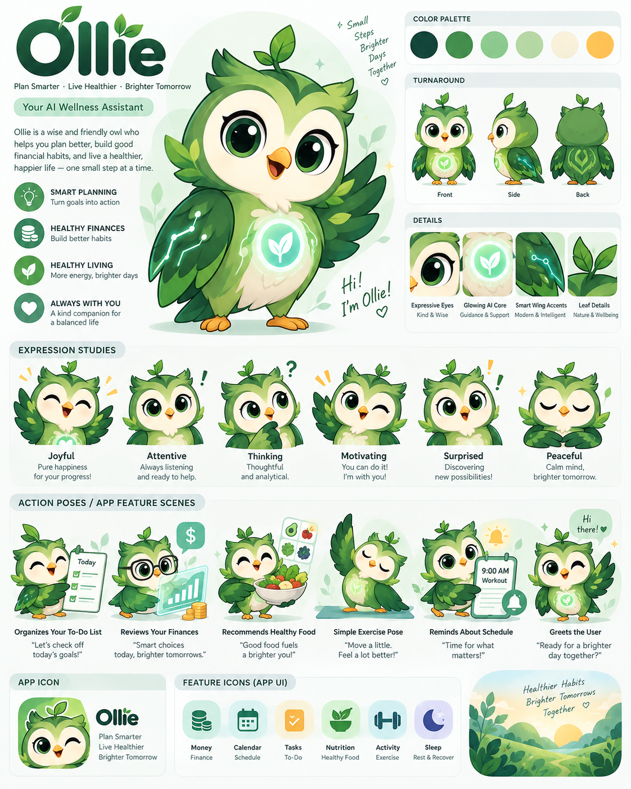

V3 · neutral

Mặt kem liền, mắt ít viền, cánh có silhouette và lông bên trong.
V2 · mốc cũ

Dùng để kiểm tra thay đổi của trán, má, mắt và cánh.
Bảng mẫu

Hình minh họa lớn là 3/4; ô turnaround có góc front.
Đọc hình ở kích thước nhỏ


So bản vector mới với V2 và bảng mẫu. Dùng hình Front trong ô turnaround làm chuẩn cho rig nhìn thẳng; hình lớn là chuẩn về ánh sáng, màu và lớp lông. Đọc phân tích tạo hình · Mở playground animation.
Mặt kem liền, mắt ít viền, cánh có silhouette và lông bên trong.
Dùng để kiểm tra thay đổi của trán, má, mắt và cánh.

Hình minh họa lớn là 3/4; ô turnaround có góc front.